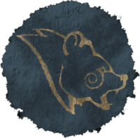

The Stormcloaks were created in 4E 176 by Ulfric Stormcloak. They believe that the Empire is just a puppet of the Thalmor and that Skyrim should secede from the corrupt Empire. They also oppose the Empire’s policies on outlawing the worship of Talos, the first mortal to ascend into godhood. The Markarth Incident was the initial conception of the Stormcloaks. Ulfric Stormcloak and his army retook the city of Markarth from the Forsworn in exchange for the city's support. Later the Imperial Legion would arrive and have Ulfric and his supporters arrested. After taking up the duties of Jarl in Windhelm, Ulfric challenged the High King Torygg to a duel. Ulfric was victorious; however many imperialists would see this as murder due to Ulfric’s use of the Thu’um (powerful magical shouts originating from dragons). This incident started Skyrim’s civil war. The Stormcloak rebellion was in control of Windhelm, Riften, Dawnstar, and Winterhold with dozens of camps close to Imperial holds and forts.
| Hold | City | Symbol |
|---|---|---|
| Eastmarch | Windhelm |  |
| The Rift | Riften | |
| The Pale | Dawnstar | |
| Winterhold | Winterhold City | |